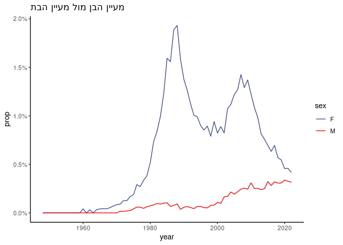

babynamesIL contains the a dataset of names given to Israeli babies in the years 1948-2021. The data was downloaded from the Israeli Bureau of Statistics (LAMAS). Only names used for at least 5 children in at least one gender and sector (“Jewish”, “Muslim”, “Christian”, “Druze” and “Other”) are included.
The following objects are available:
-
babynamesIL: For each year in from 1948 to 2021, the number of babies of each sex and sector given to each name. -
babynamesIL_totals: a dataframe with the total number of of babies with each names per sex and sector.
Installation
# Install the released version from CRAN
install.packages("babynamesIL")
# Install the development version from GitHub
devtools::install_github("aviezerl/babynamesIL")Example
library(babynamesIL)
# yearly data
head(babynamesIL)
#> # A tibble: 6 x 6
#> sector year sex name n prop
#> 1 Jewish 1948 F שרה 326 0.05002302
#> 2 Jewish 1948 F רחל 323 0.04956268
#> 3 Jewish 1948 F אסתר 263 0.04035599
#> 4 Jewish 1948 F חנה 247 0.03790087
#> 5 Jewish 1948 F מרים 190 0.02915452
#> 6 Jewish 1948 F רות 165 0.02531840
# totals per name
head(babynamesIL_totals)
#> # A tibble: 6 x 4
#> sector sex name total
#> 1 Jewish F נועה 47398
#> 2 Jewish F רחל 46301
#> 3 Jewish F יעל 45329
#> 4 Jewish F שרה 45059
#> 5 Jewish F מיכל 44945
#> 6 Jewish F אסתר 44657Add the missing values:
babynamesIL %>%
tidyr::complete(sector, year, sex, name, fill = list(n = 0, prop = 0))
#> # A tibble: 3,133,900 x 6
#> sector year sex name n prop
#> 1 Christian 1948 F 'ג'ורג' 0 0
#> 2 Christian 1948 F אאוס 0 0
#> 3 Christian 1948 F אבא 0 0
#> 4 Christian 1948 F אבגיל 0 0
#> 5 Christian 1948 F אבטיסאם 0 0
#> 6 Christian 1948 F אבי 0 0
#> # ... with 3,133,894 more rowsPlot trajectory of names:
library(ggplot2)
library(dplyr)
#>
#> Attaching package: 'dplyr'
#> The following objects are masked from 'package:stats':
#>
#> filter, lag
#> The following objects are masked from 'package:base':
#>
#> intersect, setdiff, setequal, union
babynamesIL %>%
tidyr::complete(sector, year, sex, name, fill = list(n = 0, prop = 0)) %>%
filter(name == "מעיין", sector == "Jewish") %>%
ggplot(aes(x = year, y = prop, color = sex)) +
geom_line() +
ggsci::scale_color_aaas() +
scale_y_continuous(labels = scales::percent) +
ggtitle("מעיין הבן מול מעיין הבת") +
theme_classic()
Source of data
Data was downloaded from: here
Web App
A web app using the data is available here